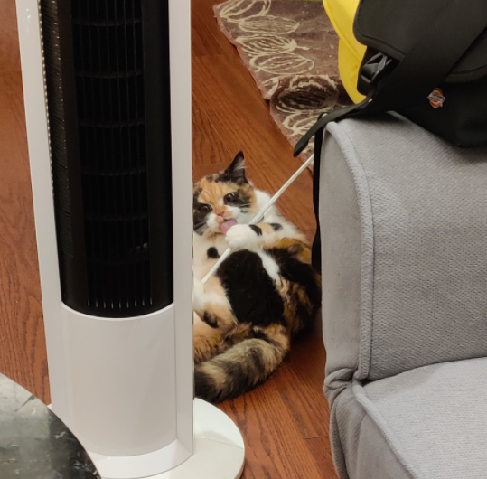
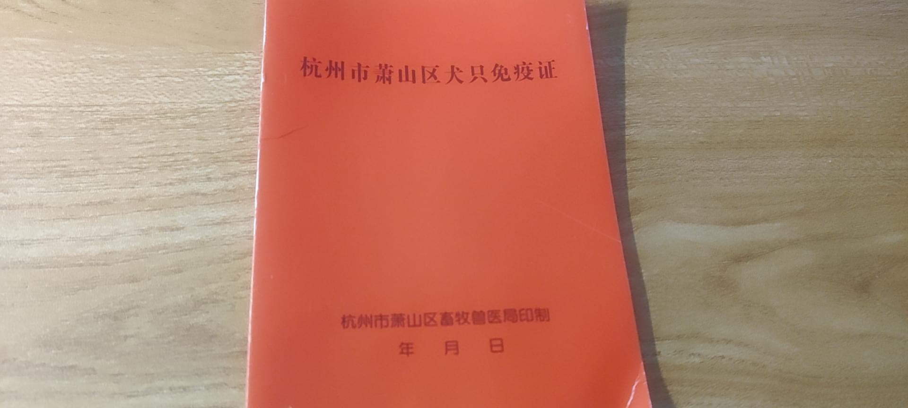
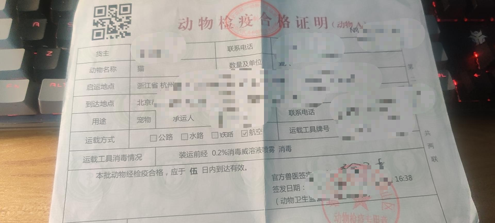
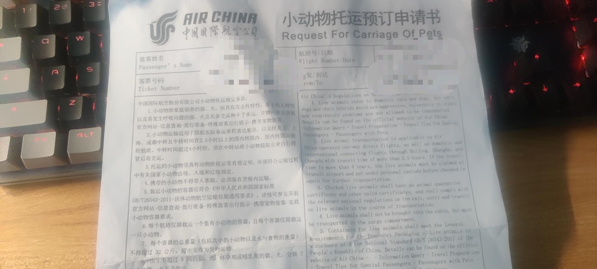

自从有了花花，大到出行，小到搬家，都像是带着孩子的寡妇，逢人总要问一句，“您这能托运(住)猫吗”。
这篇记录下我从杭州带着花花去北方的过程，总结下如何带着宠物旅行。

自驾带着宠物
这是最安全，也是最折腾的办法。唯一需要考虑的，是长达两三天的路途，宠物是否能适应用厕，饮食。当然，代价就是极其高昂的花费，包括但不限于车辆使用费，油费，住宿费等等。
航空托运
托运一只宠物，需要满足以下要求:
- 宠物有卫生部门开具的检疫合格证明
- 航班存在有氧舱，且愿意接收宠物(一般大的客机里会有2-3个名额)
卫生部门开具检疫合格证明
卫生部门开具检疫合格证明需要满足以下条件:
- 宠物拥有免疫证
- 宠物按期接种狂犬疫苗
免疫证如下图所示:

免疫证需要去政府指定的动物医院，政府指定的动物医院可以去政府网站查看，或者直接拨打当地的卫生所，也能查询到。办了免疫证后，还需要在当地接种疫苗。
有了免疫证且接种完疫苗后，就可以去当地卫生所办理检疫合格证明：

有几个时间点需要注意：
- 疫苗生效需要2周
- 检疫合格证明有效时间只有5天
航空公司受理
买机票的时候，去航空公司官网查询哪些航班提供了有氧舱，或者直接拨打航空公司的服务热线电话也行。
我托运的是使用的国航，拨打电话后，先预定好有氧仓位，2个小时内预定机票即可。预定和成功锁定仓位后，都会有邮件通知。
需要自行打印一个预定申请书，并在登机时携带。

有了有氧仓位后，需要将宠物装进航空专用的宠物箱内，箱内可以放置一些水源和布料。
到了起飞那天，需要比往常提前40分钟左右到前台，带着检疫证明和预定申请书办理宠物托运。
航空公司会给箱子进行进一步处理，包括用网绳加固，打包处理等等。需要收取一定的服务费用，我记得在30左右。
宠物托运的价格，跟宠物的重量有关，国航的计价规则是体重(kg)*1.5%票面价格，我花费了200左右。
飞机到达目的地后，需要在拿去包裹的地方等待宠物。宠物属于特殊包裹，会有专人运过来，等待时间在15分钟左右。
整个过程，花花没有感觉到不适，运输前尽量少给宠物喂食。
加急下的应急方案
部分店家会提供托运服务，有高铁和航空。如果等不了2周办理免疫证的，他们也有渠道，安全性不可知，费用普遍在500左右，谨慎选择。
- Post title：国内宠物托运指南
- Post author：ANATAS LUO
- Create time：2021-04-06 22:58:43
- Post link：https://anatasluo.github.io/2021/04/06/国内宠物托运指南/
- Copyright Notice：All articles in this blog are licensed under BY-NC-SA unless stating additionally.